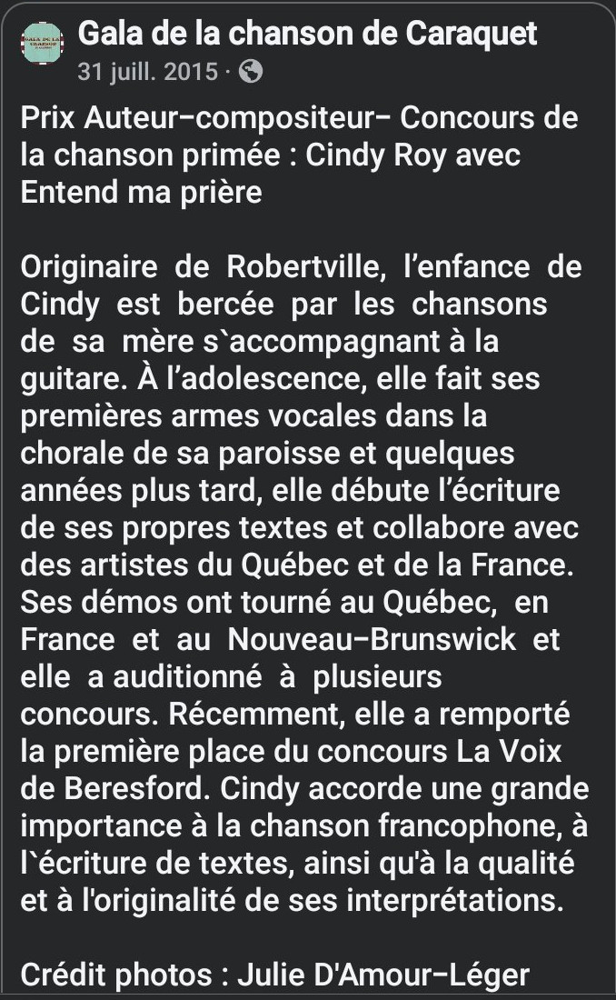
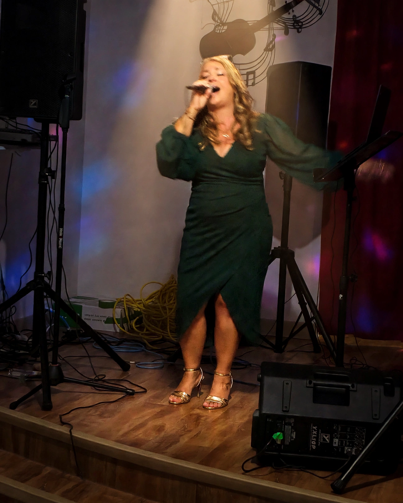
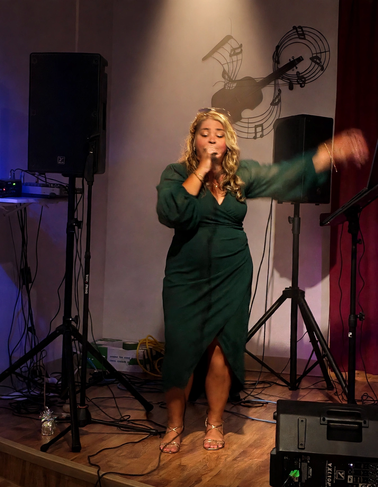
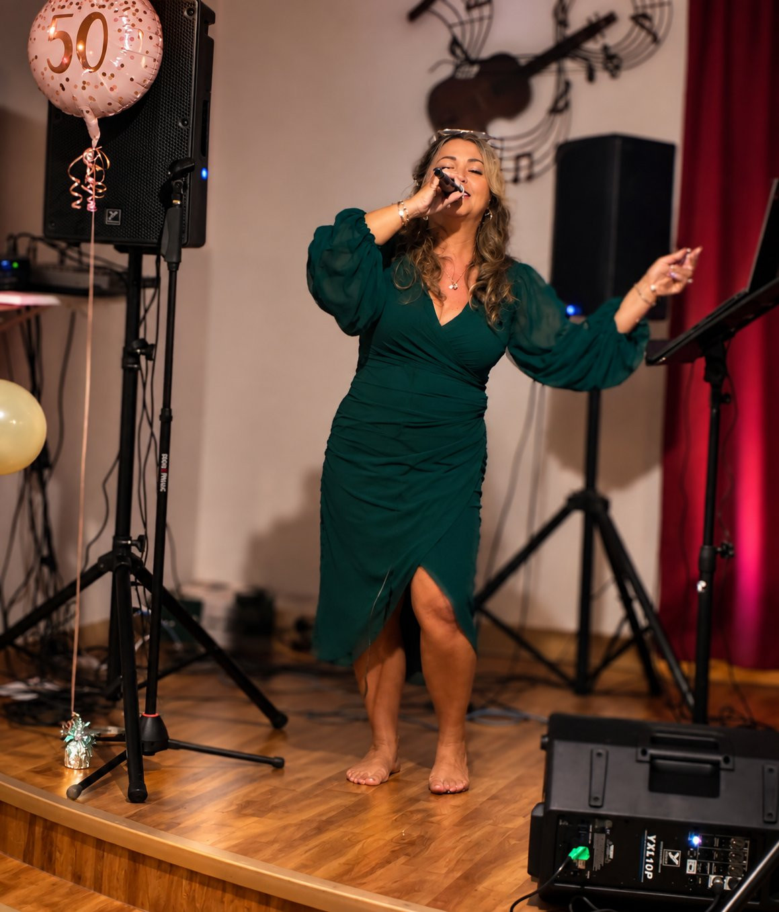

Famille 1 · Mes chansons
Chansons originales
Six chansons originales en quelques secondes — du brut, du vrai, telles qu’elles sont nées.
Ouvrir la famille complète →Robertville · Nouveau-Brunswick · Acadie
Autrice-compositrice-interprète acadienne
L’album d’une vie, sous ma croûte.
Cindy Roy en train de chanter sur scène, en robe verte
Bienvenue

« Bienvenue dans mon p’tit jardin
de Fabreville, à Laval,
mon havre tranquille où mon cœur fait escale.
Mon autre port d’attache,
c’est Robertville, au cœur de Belle-Baie,
mon Acadie natale,
là où la mer, jamais ben loin,
veille sur ma vie. »


Mère chanteuse — je chante ce que j’écris, je raconte ce que je vis, je cuisine, je ris et je prie, et partout où je passe, je sème l’amour à tout ce qui vit.

Le plateau
Mes chansons originales, mes reprises, mes chansons en construction pis mon humour — tous mes lecteurs, rassemblés ici, d’un seul coup d’œil. Le reste du site vous raconte chaque histoire en détail; ici, on écoute.
Famille 1 · Mes chansons
Six chansons originales en quelques secondes — du brut, du vrai, telles qu’elles sont nées.
Ouvrir la famille complète →Famille 2 · Mes reprises
Dix-huit reprises favorites en extraits — des versions toutes simples, pis d’autres avec arrangement.
Ouvrir la famille complète →Famille 3 · En construction
« Des bouts de moi »
Sur l’établi en ce moment : « Entend ma prière », « Moi je crois », « Les mots oubliés », « Une fille qui lâche pas » — et la suite pousse tranquillement.
Entrer dans l’Atelier →Et aussi · Pour rire
La bande-annonce de mes capsules d’humour — pour rire un bon coup, ensemble.
Voir le projet au complet →Mes plus beaux accomplissements
En 2015, ma chanson « Entend ma prière » remporte le Prix Auteur-compositeur — le prix de composition de la SOCAN — et le prix RADARTS au Gala de la chanson de Caraquet. C’est la pièce maîtresse de mon histoire : commencez votre visite par elle.

Caraquet · 31 juillet 2015
Le Prix Auteur-compositeur — le prix de composition de la SOCAN — et le prix RADARTS, reçus le même soir pour « Entend ma prière ».
Lire l’histoire du Gala →Assemblée législative · 2 décembre 2015
Le député Daniel Guitard s’est levé en Chambre pour souligner ma victoire : « Cindy fait la fierté des gens de notre région. » Sa lettre encadrée garde ses mots.
Lire l’histoire de l’hommage →Beresford · Janvier 2015
Au Carnaval du Siffleux, je remporte la première place de La Voix de Beresford : le prix des juges et le prix du public, les deux.
Lire l’histoire de Beresford →Caraquet · 31 juillet 2015
L’histoire de ma chanson primée, des prix reçus ce soir-là et d’un moment qui a marqué ma vie.

En 2014, je venais de perdre mon père, et je traversais une période très difficile : l’hôpital, le travail, mes jeunes enfants et, par-dessus tout, la maladie de Verneuil, avec ses infections à répétition et ses glandes sudoripares obstruées. Le diabète s’ajoutait à tout ça — tout arrivait en même temps.
Je marchais chaque jour, je me battais pour ma santé. Pis un jour, en pleine marche, une mélodie m’est venue, comme un cadeau tombé du ciel. J’ai levé les yeux… et les mots sont arrivés tout seuls : « Entend ma prière. »
Je me suis enregistrée sur mon téléphone, petit bout par petit bout, pour rien perdre. De retour à la maison, j’ai tout couché sur papier, puis les accords sont venus à la guitare.
Ma prière, c’était de guérir, de retrouver ma santé et de reprendre ma vie en main. J’ai l’impression qu’elle a été entendue. La maladie de Verneuil est considérée comme une maladie qui ne guérit pas, mais aujourd’hui, moi, je n’en souffre plus. J’ai perdu 140 livres. Un pas à la fois, j’ai repris ma santé en main — pis aujourd’hui, je n’ai plus besoin d’aucun médicament. Ma perte de poids, la nutrition, la prière, la foi, mon père… Je crois que tout cela a contribué à ce que je vis comme un miracle.
Un an plus tard, « Entend ma prière » remportait le Prix Auteur-compositeur au Gala de la chanson de Caraquet. J’y ai toujours vu un coup de pouce de mon papa, comme s’il me disait : « J’ai pas pu t’aider quand j’étais malade… Là, je souffre plus. Je vais t’aider, ma fille. »
J'ai composé « Entend ma prière » à la guitare — mes paroles, ma mélodie, mes accords. Juste pour la maquette envoyée au Gala, Mathieu Binette en a fait l'arrangement au piano, à partir de ce que j'avais. Pis sur la scène du Gala, ce sont les doigts magiques d'Isabelle Thériault qui l'ont portée.
Je ne changerais rien à mon histoire : tout ce que j’ai traversé m’a façonnée, les beaux moments comme les moins beaux. Même les passages difficiles nous laissent des leçons précieuses — des outils à garder dans notre coffre, pour les jours où on en aura besoin.
« Avant de me rendre », c’est moi qui l’ai écrite, mais c’est l’histoire de mon père : son voyage vers son ciel, ses trébuchements en chemin et, au bout du compte, son âme sauvée. En l’écrivant, j’avais l’impression qu’il me racontait tout ça à travers moi, comme s’il avait emprunté mon vaisseau pour me transmettre son histoire. Moi, j’étais simplement le canal, le cœur grand ouvert.
Pour moi, « Moi, je crois », c’est croire à la vie, de tout son cœur. On pense souvent que le bonheur est inaccessible, alors qu’il suffit parfois, tout simplement, de le choisir. Il faut aligner notre cœur avec notre être profond ; nos expériences humaines nous y conduisent souvent. Je crois que nous sommes une conscience, de l’énergie, et que nous avons simplement emprunté ce vaisseau pour cette vie-ci.
Le Prix Auteur-compositeur m’a été remis pour ma chanson originale « Entend ma prière » — le prix de composition associé à la SOCAN. Et ce même soir, au même gala, j’ai aussi reçu un beau laissez-passer de RADARTS pour les vitrines de Moncton et les festivités acadiennes.

Le 2 décembre 2015, le député de Restigouche-Chaleur, Daniel Guitard, s’est levé à l’Assemblée législative du Nouveau-Brunswick pour souligner la victoire de Cindy Roy : le prix auteur-compositeur de la chanson primée, au Gala de la chanson de Caraquet.
« Cindy fait la fierté des gens de notre région. Elle est une véritable ambassadrice de nos artistes et de tout le Nouveau-Brunswick. »
— Extrait du Hansard, Assemblée législative du Nouveau-Brunswick, 2 décembre 2015.
La couverture de presse complète du Gala vous attend dans le Dossier de presse.



Ateliers, fun avec la gang du Gala à la maison Dugas et souper au resto — mai 2015, avant la grande soirée.


Ma musique
Mes chansons, je les ai vécues avant de les écrire. Une voix franche, des histoires vraies — pis une fille qui lâche pas. Bienvenue dans mon petit jardin de musique, où chaque chanson a poussé à sa façon.
Envie de mes reprises à la guitare ? Touchez l’onglet « Reprises à la guitare » ci-dessus.
Les chansons de l’album d’une vie — en chantier, une à une.

Béni sois-tu — texte : Cindy Roy & Théo Rota · musique & arrangement : Théo Rota
Que la neige — texte : Cindy Roy · musique & arrangement : Théo Rota
De 2005 à 2017, j’ai prêté ma voix aux compositions de Martial Marey, auteur-compositeur français. Son histoire complète vous attend dans mon Parcours — ses chansons, elles, vivent ici, avec toutes les miennes.
En finale à MuseON-2007 — concours international France-Russie
Musique : Léonide Choumakov · Texte : Martial Marey · Interprétation : Cindy Roy (Canada)
Chanson de Martial Marey interprétée par Cindy Roy, en son hommage 🕊️🤍
Je m’amuse ici, tout brutement, à vous livrer un petit bout de moi à travers mes chansons préférées. Je n’ai pas de formation en guitare : c’est moi-même qui m’accompagne, modestement, à la guitare — parce que mon instrument de choix, ça reste ma voix. Des covers acoustiques, simples et vrais, comme dans mon salon, entre nous. D’autres titres s’ajouteront ici, au fil de mes vidéos YouTube.
Des extraits de 15 secondes — chansons de Francis Cabrel
« Ici, c'est mon atelier. Je vous montre mes chansons pendant qu'elles se font — brutes, pas finies, comme dans mon salon. Vos impressions comptent pour de vrai : dites-moi lesquelles vous touchent, lesquelles je devrais continuer. Embarquez dans mon train, pis faites un bout de chemin avec moi. 🦋 »
Bienvenue dans mon atelier : c’est ici que vivent mes chansons en construction — les élans, les ébauches, le brut. Facebook, c’est mon petit salon; l’atelier, c’est là où les chansons poussent, une à une, avant de décider lesquelles peaufiner, lesquelles finir.
« J’attends pas que mes chansons soient finies pour vous les montrer. Je vous invite à partir avec moi de mes tounes brutes, à vivre l’histoire avec moi. Ensemble, on va voir lesquelles peaufiner, lesquelles finir. »
Une chanson n’a pas besoin d’être parfaite pour avoir quelque chose à raconter. Elle peut changer, grandir et prendre une toute autre couleur avec le temps.
Les chansons de l’album d’une vie — en chantier, une à une. Les nouvelles ébauches s’ajouteront ici, un pas à la fois.
Carnaval du Siffleux · Beresford · 2015
Janvier 2015, au Carnaval du Siffleux de Beresford : je remporte la première place de La Voix de Beresford — le prix des juges et le prix du public. Une soirée gravée dans mon cœur, que je vous partage ici, en vidéos et en photos.


Photos : Cinthia-Line Boudreau


Photos : Cinthia-Line Boudreau


Moments de scène
Des prestations restaurées avec soin, partagées ici en entier — des cercles d’auteurs aux duos improvisés, en passant par ces soirées qui ont compté et qui brillent encore dans ma mémoire.






On vit à une époque où tout va vite. Les outils d’intelligence artificielle font maintenant partie de notre quotidien. Moi, je les trouve intéressants et agréables à utiliser. Mais pour moi, ce qui compte, c’est de rester vraie et de ne pas oublier ce qui nous rend humains : nos petites failles, nos imperfections et tout ce qui fait qu’on est uniques.
Avec ma musique, j’ai envie de vous montrer le chemin au complet — pas seulement la chanson une fois qu’elle est terminée. Une idée, quelques accords, des mots qui cherchent leur place… Tout ça fait partie de l’histoire.
C’est correct de partager un projet même s’il est encore à l’état brut. Une chanson n’a pas besoin d’être parfaite pour avoir quelque chose à raconter. Elle peut changer, grandir et prendre une toute autre couleur avec le temps.
Alors, je vous invite à entrer dans mon univers et à suivre mes chansons avec moi, depuis leurs premiers petits bouts jusqu’à là où elles nous mèneront. Pas à pas, vous pourrez les entendre évoluer et découvrir les coulisses de leur création.
Bienvenue dans mon univers. On va faire ce chemin-là ensemble, un pas à la fois.
« La musique, c’est de la nourriture pour mon âme. »
Je suis Cindy Roy, autrice-compositrice-interprète acadienne, née à Bathurst et originaire de Robertville, au Nouveau-Brunswick.
Je chante depuis toute petite — vers l’âge de deux ans, presque avant même de savoir parler. Dans le salon des Boudreau, la musique prenait vie : à Noël, dès que les guitares sortaient, c’était un vrai petit paradis pour mon âme de chanteuse en devenir. C’était tassé, mais j’étais déterminée — j’ai fini par me tailler une place parmi les guitares et les voix, tout près, au cœur de la musique. Mon rêve de chanter m’habitait déjà; ces petits moments venaient le nourrir et me murmurer, au creux de l’âme, que la musique était ma mission.
La musique, l’humour et la gratitude font partie de mon histoire. Dans ma famille, ces petites richesses se transmettent d’une génération à l’autre.

Ma grand-mère Marie Boudreau chantait et jouait de l’orgue dans son salon, souvent à l’oreille. Moi aussi, j’avais déjà l’oreille et je m’amusais à inventer des mélodies. C’est elle qui m’a montré mes premiers accords — ça m’a influencée, comme tout le reste.
Pendant ce temps, mon grand-père Émery Boudreau filmait tous les moments spéciaux — il aimait tellement sa caméra. Excellent cuisinier, c'est lui qui cuisait la dinde à chaque Noël. Vétéran de la Deuxième Guerre mondiale, c’était un véritable héros — il s’est battu pour notre pays. Un homme autoritaire… mais drôle comme pas un! Mon oncle Donald a raconté son histoire dans son livre, La guerre à Emery à Edmond — vous le trouverez plus bas, dans ma vitrine familiale. Ma grand-mère et lui se taquinaient sans arrêt, chacun essayant de nous recruter dans son équipe.
Ma grand-mère Violet montait sur scène sous le nom de « la Gadelle » et faisait rire des salles entières.
Mon grand-père Léandre Roy était charpentier : dans ce temps-là, il savait tout faire de ses mains — un homme très manuel — et il aimait la chasse. Mais la fin de semaine, il mettait son toupet, affichait son petit sourire en coin et partait courtiser les femmes à la danse. Même à 93 ans, il y allait encore tous les week-ends! Sa fourgonnette était souvent pleine de femmes qu’il amenait danser.
Le dimanche, après la messe, la table de Violet était toujours prête : le repas, le dessert et du thé pour tout le monde. C’est elle qui m’a appris à apprécier les petites choses et à dire merci pour ce qu’on a.
Mon père avait hérité du sens de l’humour de sa mère. Il faisait des imitations de politiciens et se promenait avec un chandail à mon effigie (avec ma photo dessus), ses bretelles multicolores bien en vue, en disant à tout le monde : « C’est ma fille, ça! »
À ma mère, Mona — la toute première.
Ma mère, c’est une force tranquille, une artiste dans l’âme.
C’est elle, la toute première, qui m’a donné le goût de la musique. Je viens d’une famille musicale — ça a bercé toute mon enfance — mais ce sont nos soirées toutes seules, elle avec sa guitare, à me jouer des petits bouts de ses compositions, qui sont venus me chercher au tout début. Avant Diane, avant Cabrel, avant toutes mes influences, il y a eu ma mère. Le plus gros morceau de tout, c’est à elle qu’il revient.


À mes grands — ma plus grande fierté.
Je suis maman de deux grands — Shawn et Marie-Eve — ma plus grande fierté. Je les aime plus que tout au monde, pis je suis tellement fière d’eux : ils portent un bout de mon cœur partout où ils vont. Leur vie leur appartient : le reste, je le garde privé, par respect pour eux.
À Michel — l'homme de ma vie.
Michel, l’homme de ma vie — mon complice en tout. Toujours le premier à m’encourager, il connaît mes chansons par cœur — mes silences aussi. On partage le vaisseau, pis la musique : il prend sa guitare pour le plaisir, on chante à deux, on s’amuse comme des enfants — pis on vit au max les belles années qui nous sont données, une journée précieuse à la fois. Un regard, un fou rire, une toune qui part toute seule : c’est ça, nous deux.


Quand je chante, quand j’écris ou quand je fais rire, c’est tout ce monde-là qui chante, écrit et rit avec moi. Ce sont mes racines, mon Acadie — pis c’est un bout de tout ça que je vous partage, un pas à la fois.
Vitrine familiale
Chez nous, l’art, c’est de famille — un vrai buffet de talents. Des livres, de la peinture, des chansons, de la bonne cuisine, de la soudure, de la construction, de la mécanique, de l’électricité, des musiciens pis des libres penseurs — chacun a sa façon de faire de l’art. Voici les œuvres de ma parenté — à découvrir, à savourer, à encourager.
Pascal Roy et Kevin Duguay, propriétaires du Mexiglù, restaurant mexicain à Bathurst (755, avenue St-Pierre).
« La guerre à Emery à Edmond », le récit de la Deuxième Guerre mondiale de mon grand-père, bâti à partir de ses propres cassettes vidéo. Il a aussi publié le roman « Partir pour repartir ».
Son roman « All intérieur », aux Éditions de la francophonie.
Peintre. Son homard géant veille sur le quai de Petit-Rocher. C’est elle aussi qui a peint la page couverture du roman de son frère Donald, « Partir pour repartir ».

Peintre de la région de Moncton. Son livre « The Life Gardener: A Journey Towards Authenticity » (en anglais).
Auteur-compositeur-interprète aussi : deux albums — « Xpressions » (avec « Un Rêve En Acadie »), du temps de sa victoire à Tremplin '97, et « Lessons Learned » (2012), la trame sonore de son livre.
Il a aussi fondé Expressions Painting University, son école en ligne pour peintres.
Originaire de Robertville, comme moi. Son roman jeunesse « Reflet d’elle-même ».
Soudeur Red Seal, propriétaire d’A.R. Soudage à Petit-Rocher : soudage, machinage et découpe laser. Je suis fière de lui.
Ma tante, chanteuse elle aussi. Sa chanson « Délivrer » est sur sa chaîne YouTube.
« Un membre de ma famille qui fait de belles choses pis qui est pas ici? Écris-moi un message — je vais t'ajouter avec plaisir. »
Je suis chanteuse avant tout. Ma voix, c’est mon instrument, pis les mélodies naissent dans ma tête — parfois même au réveil. Autodidacte, je me suis formée en écoutant, en m’enregistrant, en pratiquant pendant des milliers d’heures, en collaborant avec des musiciens du Québec et de la France — de mes premiers pas sur scène jusqu’à mes expériences en studio.
De la chorale de Robertville aux concours, des soirées d’écriture aux collaborations, j’ai toujours gardé des chansons dans le tiroir — pis un rêve qui, lui, est resté bien vivant. Les chansons que je compose, ce sont des bouts de moi que je transforme en musique pis que je partage avec vous.
« Chanter, pour moi, c’est épouser l’âme d’une toune, corps et âme — y mettre mes couleurs, ma flamme, pis valser avec elle, cœur à cœur. »

De petits instants de bonheur, captés dans mon havre de paix.


« Depuis ma tendre enfance, je sais que je suis ici pour une raison. Je me suis jamais sentie faite pour les cadres : je peux y entrer, faire ma petite besogne à ma façon, mais ma place est plus grande que ça. Ma mission, c’est d’apporter de l’amour vrai, partout où je passe. Parce que là où il manque pas d’amour, l’ennemi n’est pas invité. Il a même pas envie de venir : il lui reste pas de place. Dans le fond, c’est nous qui contrôle ça, les portails — si on les remplit d’amour, il se fera pas de mauvaise craque. »
Préserver l’humanité.
Préserver son énergie.
Préserver sa conscience.
Quand la conscience est bonne, quand la conscience est alignée, l’humanité a rien à craindre.
Un pas à la fois, sous ma croûte.


Parcours & distinctions
Mon parcours, c’est celui d’une battante : une femme qui a vécu, aimé, travaillé, élevé ses enfants, recommencé — pis qui n’a jamais lâché cette partie d’elle-même qui avait tant besoin de chanter.
J’ai aussi osé les auditions des grands concours télé : Canadian Idol (2003), Star Académie (2005) et La Voix (2015).

J’ai fait mes premières armes dans la chorale de ma paroisse, à Robertville, où j’attendais les dimanches avec impatience pour chanter mes petits solos. J’étais une enfant pleine de vie : je chantais, je dansais — des cours de danse, des cours d’orgue, des cours de natation — toujours sur le go. Pis je chantais, je chantais, je chantais, dans ma chambre, avec mon petit karaoké. J’ai jamais arrêté : la musique a toujours été au cœur de ma vie.
Un merci tout spécial à tante Diane.
« Quand mon frère et moi étions jeunes, les circonstances ont fait qu'il a fallu trouver un toit pour nous deux. Diane Cormier, ma tante par alliance, nous a accueillis pendant plusieurs années. Elle nous a donné un toit et s'est assurée qu'on ne manque de rien. Je préfère garder les détails de cette période pour moi, mais je tiens à reconnaître ce qu'elle a fait pour nous. Elle est encore présente dans nos vies aujourd'hui, surtout auprès de mes enfants. Pour tout ça, je lui dis merci. »
Merci d'avoir été là dans pas mal toutes mes aventures — pis d'avoir capturé tant de ces moments-là en vidéo, pour qu'on puisse les revivre encore et encore.
De 2005 à 2008, j’ai eu le bonheur de chanter aux fêtes de la Saint-Jean à Saint-Adolphe-d’Howard, aux côtés de Mathieu Bessette, Pierre Shapiro et Mathieu Binette.
J’aurais voulu vivre de ma musique, mais les bills, faut que ça se paye : mon gagne-pain, ça a toujours été mon travail à temps plein, avec deux enfants à élever. Ma musique, c’était ma passion — un sideline qui trouvait sa place quand le temps le permettait : des spectacles ici et là, surtout l’été dans les festivités acadiennes, pis du chant à l’église.
« De 2013 à 2019, j’ai chanté la messe au complet dans les églises de la région — Bathurst, Robertville, Beresford, Petit-Rocher et Pointe-Verte — deux dimanches par mois, accompagnée par Nicole McGrath.
Nicole, c’était mon enseignante de première et de sixième année, devenue une grande amie. Elle savait faire planer ma voix vers le ciel. Elle me disait toujours : « Cindy, toi, quand tu chantes, c’est comme une prière. » Elle a une grosse place dans mon cœur — elle y est toujours. Elle n'est plus de ce monde — paix à son âme — mais elle m'accompagnera toujours.
On chante pas pour la gloire. Mais quand les gens venaient me dire « tu nous aides à prier », ça faisait tellement de bien. Rendre service avec ma voix, c’est un pur privilège, et je suis pleine de gratitude, à chaque fois. »

La Voix de Beresford 2015 — prix des juges et prix du public. → Voir la section
Gala de la chanson de Caraquet 2015 — deux prix, dont le Prix Auteur-compositeur. → Voir la section
« Je suis une fille qui rêve en grand — pis mon plus grand rêve, il a le visage d’un album.
Une chanson, ça naît tout petit : quelques mots griffonnés, une mélodie qui cherche son chemin. Du brut, du vrai — c’est de quoi ça a l’air, au tout début. Pis à partir de là, doucement... ça peut devenir un diamant.
Si une belle rencontre musicale se présente en chemin, ma porte est ouverte : les atomes crochus, quand ils sont là, ça se sent. Ça se force pas — ça se reconnaît. »
« De 2005 à 2017, j’ai collaboré à distance avec Martial Marey (dit « Michel de la lumière »), auteur-compositeur français. Il m’envoyait ses maquettes en me disant : « Fais de la magie avec ça » — et il me laissait carte blanche pour les interpréter, être moi-même. Quand je lui retournais les chansons, il me répondait : « Tu m’as fait tomber en bas de ma chaise! »
J’ai prêté ma voix à la plupart de ses compositions, dont « T’aimer au firmament », une de mes préférées, et « Mes cris dans le silence » (musique de Léonide Choumakov), qui s’est rendue jusqu’en finale du concours international en ligne MuseON-2007.
Avec de jeunes enfants, c’était l’idéal : continuer la musique de la maison, apprendre à m’enregistrer, approfondir ma voix et mes techniques d’enregistrement. Je garde ces belles années en précieuse mémoire — son expérience, sa bienveillance. Ça a été une véritable école, pis un beau cadeau.
Il nous a laissé de belles chansons à texte du cœur, que j’aime beaucoup. Martial n’est plus de ce monde — paix à son âme — mais ses chansons, elles, vivent encore. 🕊️ »
🎧 Ses chansons vivent dans Ma musique, avec toutes mes autres chansons — « Mes cris dans le silence » et « T’aimer au firmament » vous y attendent.
« Ma voix a voyagé loin, à la radio — pis sur le web en même temps. « Ma vraie vie », une chanson de Claude Argelès sur un texte d’Ida Sala que j’ai eu le bonheur d’interpréter, a joué en faible rotation à CKLE-FM, en Acadie, à l’époque où Mathieu Friolet y était animateur.
Et mes interprétations des chansons de Martial Marey ont aussi trouvé leur beau chemin jusqu’aux ondes : à CJMS, dans le coin de Lévis et de la Chaudière-Appalaches, et même à Radio Corsaire, en France. De l’Acadie à la France, un pas à la fois. 🕊️ »
Influences

Pourquoi Diane Tell? Parce qu’elle me rappelle les femmes de ma famille. Sa douceur, c’est celle des femmes Boudreau — mes tantes, ma mère. Mais derrière cette douceur, il y a un cœur de guerrière, de rebelle : elle fait sa petite affaire, elle sort des cadres. Féminine, coquette assumée — avec une bonne tête sur les épaules. Ce côté-là d’elle, il colle tellement à mon énergie — comme si on se reconnaissait.
Diane, c’est la première artiste que j’ai entendue de ma vie. J’avais cinq ans, on vivait à Calgary, et c’est mon oncle Alain qui m’avait donné une de ses cassettes. Ma mère avait un stéréo à deux cassettes : je m’enregistrais en chantant avec Diane — pis je rêvais déjà, du haut de mes cinq ans, de chanter comme elle. « Je veux chanter comme Diane! » J’étais déjà exigeante envers moi-même, à cinq ans.
Je me suis toujours sentie comme une belle petite bébitte weird, pas comme les autres — je rentrais pas dans le cadre, moi non plus. Mon album préféré d’elle, c’est En flèche : ma petite cassette orange, je l’ai gardée toute ma vie — même si, un jour, j’ai enregistré par-dessus une chanson par accident. Elle vaut plus que de l’or pour moi, cette cassette-là.
C’est sûrement là, devant ce stéréo, que j’ai décidé : « Moi, je veux chanter. » Bien des artistes sont passés depuis. Diane, elle, je l’ai toujours gardée avec moi — tout le long du chemin, comme une étoile qui me guide.
Je me reconnais dans chacune d’elles.
Et tellement plein d’autres…
« Ma voix, c’est tous ces petits bouts de moi qui viennent de ce qui passait à la radio. »
Un petit moment avec moi
Un instant tout simple, juste entre nous — le temps d’une chanson.
Avant de poursuivre votre visite, offrez-vous une petite minute. Imaginez-vous dans mon salon : je vous y accueille, guitare à la main. Pas de flafla — juste ma voix, ma guitare, pis « Octobre », cette magnifique chanson de Francis Cabrel que j’aime tant chanter.
En ce bel automne, que ce petit moment vous réchauffe le cœur, tout doucement… 🤎🍂

Une philosophie · Un projet de contenu
Un pas à la fois avec Cindy — mon petit rendez-vous vidéo, à la maison, comme entre amies et amis. L’histoire de mes chansons, ma cuisine à ma façon, mon jardin, mon Acadie, mon parcours. Entre rêves et prières.
Le train continue de rouler, un pas à la fois.
« Toute la femme derrière la fille qui lâche pas. »
Actualités & projets
Mon approche est différente : j’attends pas que mes chansons soient finies pour vous les montrer. Je veux vivre cette vie-là, maintenant, à plein — chaque journée compte. Alors je vous invite à partir avec moi de mes tounes brutes, à vivre l’histoire avec moi, à embarquer dans le train. Ensemble, on va voir lesquelles peaufiner, lesquelles finir. C’est ça, mon projet : l’album d’une vie, un pas à la fois.
Il fallait que je vive, d’abord, avant de pouvoir livrer des chansons qui me ressemblent vraiment — parce que chanter, pour moi, ça se fait avec du vécu.
À 18, 20, 30 ans, le vécu est encore tout mince. À 50 ans, c’est différent : quand on a traversé les bons moments comme les épreuves, le cœur est plein — pis ça donne des maudites de bonnes tunes.
Cet album-là, je l’appelle mon album d’une vie — nourri de mes racines, de mes amours, de mes blessures, et surtout de ma résilience. Il s’en vient, un pas à la fois. Sans presse, mais avec tout ce que je suis.
Si je n’ai pas sorti d’album avant, c’est simplement parce que ce n’était pas encore mon temps. Maintenant, je sens le calling — parce que j’ai vraiment quelque chose à dire, pis à partager de tout mon cœur.
En attendant l’album, ce site-ci, c’est lui : tous les petits bouts de moi, ramassés avec amour, un pas à la fois.
Projets à venir
Attachez votre tuque : ça mijote, ça pétille — pis j’ai tellement hâte de tout vous montrer !
Mon podcast vidéo, tourné à la maison, tout près de vous — je vous raconte tout ça en détail dans ma section Balado.
Ma cuisine à ma façon — moins de sucre, mais plein, plein de cœur.
Entre rêves et prières — mon livre, en préparation, une page à la fois.
Cindy Roy Show — mes capsules d’humour, pour rire un bon coup, ensemble.
Presse et médias
Entrevues, articles et documents officiels — le beau récit que les médias ont fait de mon parcours.

Les articles, en images.


Pour les salles et les organisateurs
Autrice-compositrice-interprète acadienne · Robertville, Nouveau-Brunswick
Je suis Cindy Roy, autrice-compositrice-interprète acadienne, née à Bathurst et originaire de Robertville, au Nouveau-Brunswick. Je suis chanteuse avant tout : ma voix, c’est mon instrument.
Ma voix et ma guitare : je m’accompagne moi-même, modestement, à la guitare — mon instrument de choix, ça reste ma voix. Pour une réservation ou une collaboration, écrivez-moi.
Mon CV artistique complet — disponible sur demande, avec plaisir.
Embarquez dans mon train — pour un petit bout de chemin, ou pour tout le bout que vous choisirez de vivre avec moi.
C'est gratuit — votre courriel reste entre nous, jamais partagé, pis vous pouvez débarquer quand vous voulez.
Si mon courriel de confirmation se fait attendre, jetez un œil dans vos courriels indésirables.
Aucun spectacle annoncé pour le moment : je peaufine mon répertoire, pis je prépare notre retour en Acadie, à Michel pis moi — avec, éventuellement, en 2027, un beau retour sur scène. Pour une réservation, écrivez-moi !
Contact & réservation
« Envie de m’inviter à chanter ? Pour un spectacle ou un événement, écrivez-moi — je vous réponds moi-même, avec le sourire, un pas à la fois. »
Collaborations : je suis ouverte aux belles rencontres musicales — co-écriture, arrangements, scène. Ma porte est ouverte.